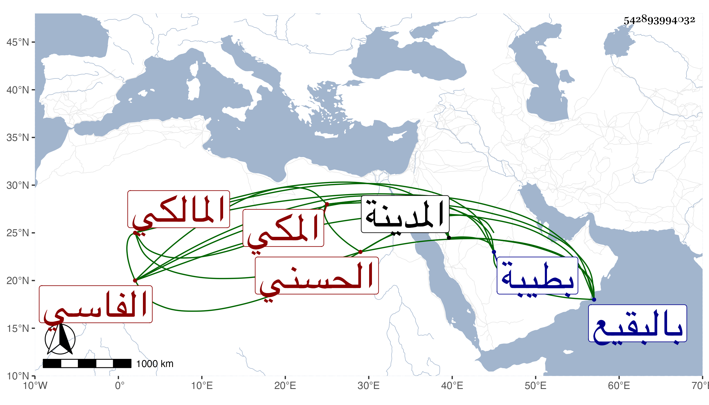

0902Sakhawi.DawLamic.ITO20230111-ara1.EIS1600.542893994032
Biography ID: 542893994032
26
محمد بن عبد الرحمن بن أبي الخير محمد بن أبي عبد الله محمد بن محمد بن عبد الرحمن بن أحمد بن علي بن محمد بن عبد الرحمن أبو الخير الحسني الفاسي المكي المالكي . وأمه أم هانيء ابنة الشريف على الفاسي . حضر على العز بن جماعة وسمع من الجمال بن عبد المعطي وفاطمة ابنة الشهاب أحمد بن قاسم الحرازي والنشاوري والأميوطي والكمال بن حبيب وغيرهم . وأجاز له الصلاح بن أبي عمر وابن أميلة وابن الهبل والسوقي وابن النجم وعمر بن إبراهيم النقبي وأحمد بن عبد الكريم البعلي في آخرين . وتفقه بالشيخ موسى المراكشي وأبيه وخلفه في تصديره بالمسجد الحرام فأجاد وأفاد . وكان من الفضلاء الأخيار ذا حظ من العبادة والخير والثناء عليه جميل . مات في يوم الاثنين ثالث شوال سنة ست بطيبة ودفن بالبقيع وقد جاز الأربعين بيسير وعظمت الرزية بفقده فإنه لم يعش بعد أبيه إلا نحو سنة . ذكره الفاسي مطولا وتبعته في تاريخ المدينة ، والمقريزي في عقوده .
